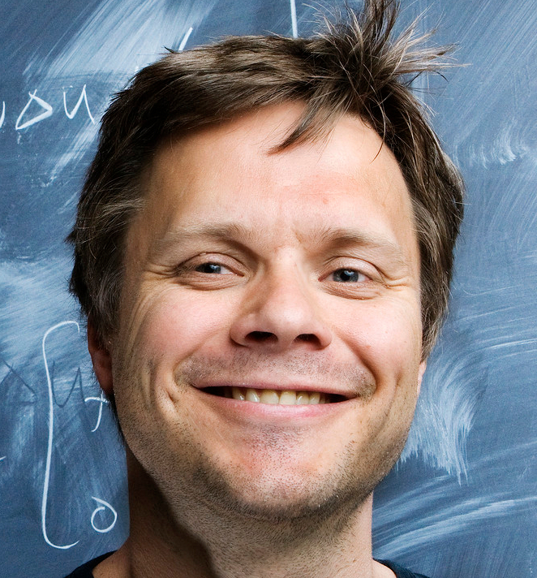
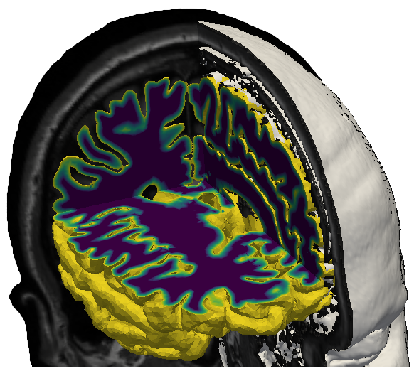
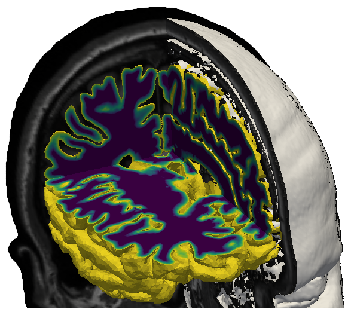
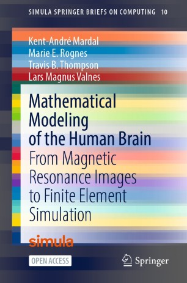

 

Kent-Andre Mardal, Professor in Mechanics,
Department of Mathematics,
University of Oslo
e-mail: kent-and@math.uio.no,
Adjunct Chief Research Scientist,
Simula Research Laboratory
e-mail: kent-and@simula.no
Consulant for
Expert Analytics
e-mail: kent@xal.no
Upcomming books in 2024:
- Quantitative approaches to microcirculation: mathematical models, computational methods, measurements and data analysis
(co-edited with Paolo Zunino and Andreas Linninger)
- Mathematical modeling of the human brain II: from glymphatics to deep learning
(co-edited with Jørgen Dokken, Marie Rognes, Lars Magnus Valnes and Vegard Vinje)
Earlier books:
